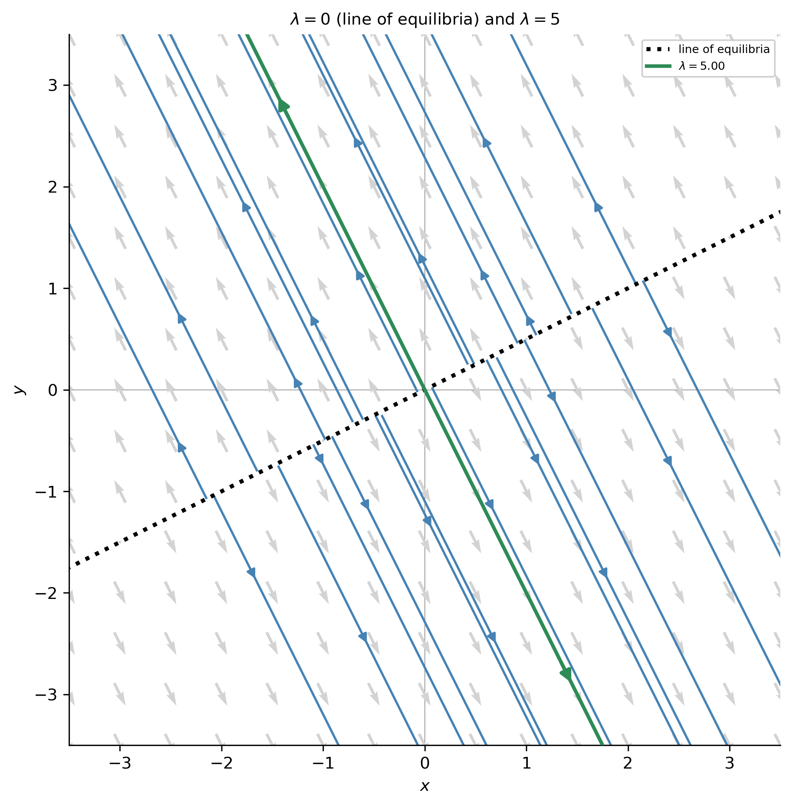

# This is a code cell that imports the necessary libraries for our session.import numpy as np # NumPy for numerical computationsimport scipy as sp # SciPy for scientific computingimport sympy as sym # SymPy for symbolic mathematicsimport matplotlib as mpl # Matplotlib for plottingimport matplotlib.pyplot as plt # Matplotlib pyplot interfacefrom scipy.integrate import solve_ivp # ODE solvermpl.rcParams['figure.dpi'] =150mpl.rcParams['axes.spines.top'] =Falsempl.rcParams['axes.spines.right'] =False
This page collects full solutions to select exercises from Homework 9. Each solution is worked out “by hand” and then, where helpful, confirmed symbolically using SymPy or other computational tools. See the Homework Solutions page for the full list.
Throughout, \(\mathbf{x}'=A\mathbf{x}\) is a \(2\times2\) linear system, and its behavior is governed by the eigenpairs of \(A\). The three cases are:
Real, distinct eigenvalues\(\lambda_1\neq\lambda_2\) with eigenvectors \(\mathbf{v}_1,\mathbf{v}_2\): \(\ \mathbf{x}(t)=c_1\mathbf{v}_1e^{\lambda_1t}+c_2\mathbf{v}_2e^{\lambda_2t}\).
Complex eigenvalues\(\lambda=a\pm bi\) with eigenvector \(\mathbf{v}=\mathbf{w}+i\mathbf{z}\): \(\ \mathbf{x}(t)=c_1e^{at}(\mathbf{w}\cos bt-\mathbf{z}\sin bt)+c_2e^{at}(\mathbf{w}\sin bt+\mathbf{z}\cos bt)\) (Equation 4.38 in the text).
A repeated eigenvalue\(\lambda\) with only one eigenvector \(\mathbf{v}\): \(\ \mathbf{x}(t)=c_1\mathbf{v}e^{\lambda t}+c_2(t\mathbf{v}+\mathbf{w})e^{\lambda t}\), where \((A-\lambda I)\mathbf{w}=\mathbf{v}\).
Several of the SymPy checks below use one small helper, defined here once. Given a matrix \(A\) and two proposed solutions, it checks that each solves \(\mathbf{x}'=A\mathbf{x}\) and that the pair is a fundamental set (the matrix with the two solutions as columns has nonzero determinant at \(t=0\), the Wronskian condition).
Show the code
t = sym.symbols('t', real=True)c1, c2 = sym.symbols('c1 c2')def verify(A, cols, label):"""Check that each column solves x' = A x and that the columns are independent.""" residuals = [sym.simplify(sym.diff(x, t) - A*x) for x in cols] solves =all(r == sym.zeros(2, 1) for r in residuals) W0 = sym.simplify(sym.Matrix.hstack(*cols).subs(t, 0).det())print(f"{label}: both solve x' = Ax: {solves}; Wronskian at t=0: {W0}")
Section 4.4.1 — Real Unequal Eigenvalues
Exercise 1, Page 217
Using the given eigenpairs, write the general solution and state the type of critical point and its stability.
For real eigenvalues \(\lambda_1,\lambda_2\) the general solution is \(\mathbf{x}(t)=c_1\mathbf{v}_1e^{\lambda_1t}+c_2\mathbf{v}_2e^{\lambda_2t}\), and the type of the critical point at the origin is decided by the signs of the eigenvalues:
both negative: every solution decays to the origin, a stable node (sink), asymptotically stable;
both positive: every solution (other than \(\mathbf{0}\)) leaves the origin, an unstable node (source);
The eigenvalues have opposite signs: the origin is a saddle, unstable.
eigpairs = {"a": [(-1, [-1, 2]), (-2, [1, 2])],"b": [(-1, [-1, 2]), (2, [1, 2])],"c": [(1, [-1, 2]), (2, [1, 2])],"d": [(-3, [2, 1]), (2, [-1, 0])],}for label, ((l1, v1), (l2, v2)) in eigpairs.items(): v1, v2 = sym.Matrix(v1), sym.Matrix(v2) P = sym.Matrix.hstack(v1, v2) A = P * sym.diag(l1, l2) * P.inv() # the system that has these eigenpairs verify(A, [v1*sym.exp(l1*t), v2*sym.exp(l2*t)], f"({label}) A = {A.tolist()}") kind = ("stable node (sink)"ifmax(l1, l2) <0else"unstable node (source)"ifmin(l1, l2) >0else"saddle (unstable)")print(" type:", kind)
(a) A = [[-3/2, -1/4], [-1, -3/2]]: both solve x' = Ax: True; Wronskian at t=0: -4
type: stable node (sink)
(b) A = [[1/2, 3/4], [3, 1/2]]: both solve x' = Ax: True; Wronskian at t=0: -4
type: saddle (unstable)
(c) A = [[3/2, 1/4], [1, 3/2]]: both solve x' = Ax: True; Wronskian at t=0: -4
type: unstable node (source)
(d) A = [[2, -10], [0, -3]]: both solve x' = Ax: True; Wronskian at t=0: 1
type: saddle (unstable)
Note
For each part, SymPy rebuilds the matrix \(A=PDP^{-1}\) that has the given eigenpairs and confirms that both boxed terms solve \(\mathbf{x}'=A\mathbf{x}\) and form a fundamental set. The classification by the signs of the eigenvalues agrees with the one above.
Tip
For the two nodes, the eigenvalue of smaller magnitude is the “slow” direction. In (a), \(e^{-t}\) decays more slowly than \(e^{-2t}\), so as \(t\to\infty\) every orbit not on the fast line approaches the origin tangent to the slow eigenvector\((-1,2)^{\mathrm T}\). Running time backward, the picture reverses and orbits become parallel to the fast eigenvector. The same reasoning for the source in (c) says orbits leave the origin tangent to the slow direction \((-1,2)^{\mathrm T}\) and become parallel to the fast direction \((1,2)^{\mathrm T}\) far away.
Exercise 2, Page 217
Find the general solution of the systems with the following coefficient matrices.
(a) \(A=\begin{pmatrix}-1&1\\0&-3\end{pmatrix}\).
\(A\) is upper triangular, so the eigenvalues are the diagonal entries: \(\lambda=-1,\ -3\).
\(\lambda=-1\): \(A+I=\begin{pmatrix}0&1\\0&-2\end{pmatrix}\) gives \(v_2=0\), so \(\mathbf{v}_1=\begin{pmatrix}1\\0\end{pmatrix}\).
\(\lambda=-3\): \(A+3I=\begin{pmatrix}2&1\\0&0\end{pmatrix}\) gives \(2v_1+v_2=0\), so \(\mathbf{v}_2=\begin{pmatrix}1\\-2\end{pmatrix}\).
\(\operatorname{tr}A=-3\) and \(\det A=2-1=1\), so \(\lambda^2+3\lambda+1=0\) and \[
\lambda=\frac{-3\pm\sqrt5}{2}.
\]
Both roots are real and negative. The first row of \(A-\lambda I\) gives \((-1-\lambda)v_1+v_2=0\), so \(\mathbf{v}=\begin{pmatrix}1\\1+\lambda\end{pmatrix}\):
\(\operatorname{tr}A=4\) and \(\det A=3+3=6\), so \(\lambda^2-4\lambda+6=0\) and \[
\lambda=\frac{4\pm\sqrt{16-24}}{2}=2\pm i\sqrt2.
\]
The eigenvalues are complex, so we use Equation 4.38. For \(\lambda=2+i\sqrt2\), the first row of \(A-\lambda I\) gives \((-1-i\sqrt2)v_1+v_2=0\), so \(v_2=(1+i\sqrt2)v_1\): \[
\mathbf{v}=\begin{pmatrix}1\\1+i\sqrt2\end{pmatrix}=\underbrace{\begin{pmatrix}1\\1\end{pmatrix}}_{\mathbf{w}}+i\underbrace{\begin{pmatrix}0\\\sqrt2\end{pmatrix}}_{\mathbf{z}}, \qquad a=2,\ b=\sqrt2.
\]
Then \(\mathbf{w}\cos bt-\mathbf{z}\sin bt=\begin{pmatrix}\cos\sqrt2t\\\cos\sqrt2t-\sqrt2\sin\sqrt2t\end{pmatrix}\) and \(\mathbf{w}\sin bt+\mathbf{z}\cos bt=\begin{pmatrix}\sin\sqrt2t\\\sin\sqrt2t+\sqrt2\cos\sqrt2t\end{pmatrix}\).
(a) eigenvalues: {-3: 1, -1: 1}
(a): both solve x' = Ax: True; Wronskian at t=0: -2
(b) eigenvalues: {1: 1, -4: 1}
(b): both solve x' = Ax: True; Wronskian at t=0: 5
(c) eigenvalues: {-3/2 - sqrt(5)/2: 1, -3/2 + sqrt(5)/2: 1}
(c): both solve x' = Ax: True; Wronskian at t=0: -sqrt(5)
(d) eigenvalues: {2 - sqrt(2)*I: 1, 2 + sqrt(2)*I: 1}
(d): both solve x' = Ax: True; Wronskian at t=0: sqrt(2)
Note
SymPy’s eigenvalues match those found by hand, and in all four parts the two boxed terms solve \(\mathbf{x}'=A\mathbf{x}\) and have a nonzero Wronskian, so each is a fundamental set and the boxed combination is the general solution.
Exercise 4, Page 218
Solve the initial value problem \[
\mathbf{x}'=\begin{pmatrix}1&-2\\3&-4\end{pmatrix}\mathbf{x},\qquad \mathbf{x}(0)=\begin{pmatrix}3\\1\end{pmatrix}.
\]
By Hand.
Step 1 — Eigenvalues.\(\operatorname{tr}A=-3\) and \(\det A=-4+6=2\), so \(\lambda^2+3\lambda+2=(\lambda+1)(\lambda+2)=0\) and \(\lambda=-1,\ -2\).
Step 2 — Eigenvectors.
\(\lambda=-1\): \(A+I=\begin{pmatrix}2&-2\\3&-3\end{pmatrix}\) gives \(v_1=v_2\), so \(\mathbf{v}_1=\begin{pmatrix}1\\1\end{pmatrix}\).
\(\lambda=-2\): \(A+2I=\begin{pmatrix}3&-2\\3&-2\end{pmatrix}\) gives \(3v_1=2v_2\), so \(\mathbf{v}_2=\begin{pmatrix}2\\3\end{pmatrix}\).
The general solution is \[
\mathbf{x}(t)=c_1\begin{pmatrix}1\\1\end{pmatrix}e^{-t}+c_2\begin{pmatrix}2\\3\end{pmatrix}e^{-2t}.
\]
Step 3 — Apply the initial condition. At \(t=0\), \[
c_1\begin{pmatrix}1\\1\end{pmatrix}+c_2\begin{pmatrix}2\\3\end{pmatrix}=\begin{pmatrix}3\\1\end{pmatrix}\quad\Longrightarrow\quad
\begin{aligned}c_1+2c_2&=3\\c_1+3c_2&=1.\end{aligned}
\]
Subtracting the first equation from the second gives \(c_2=-2\), and then \(c_1=3-2c_2=7\).
Eigenvalues of A: {-1: 1, -2: 1}
Residual x' - A x: Matrix([[0, 0]])
x(0) = Matrix([[3, 1]])
Note
SymPy confirms that the boxed solution satisfies the differential equation exactly (the residual is the zero vector) and that \(\mathbf{x}(0)=(3,1)^{\mathrm T}\).
Section 4.4.2 — Complex Eigenvalues
Exercise 1, Page 220
Write the general solution of the linear system with the given eigenvalues and eigenvectors and express each solution in component form.
Write \(\lambda=a+bi\) and \(\mathbf{v}=\mathbf{w}+i\mathbf{z}\). Taking real and imaginary parts of \((\mathbf{w}+i\mathbf{z})e^{(a+bi)t}\) gives the general solution (Equation 4.38) \[
\mathbf{x}(t)=c_1e^{at}(\mathbf{w}\cos bt-\mathbf{z}\sin bt)+c_2e^{at}(\mathbf{w}\sin bt+\mathbf{z}\cos bt).
\]
Take \(\lambda=i\), so \(a=0\) and \(b=1\), with \(\mathbf{v}=\begin{pmatrix}1\\i\end{pmatrix}=\underbrace{\begin{pmatrix}1\\0\end{pmatrix}}_{\mathbf{w}}+i\underbrace{\begin{pmatrix}0\\1\end{pmatrix}}_{\mathbf{z}}\). Then \[
\mathbf{x}(t)=c_1\left[\begin{pmatrix}1\\0\end{pmatrix}\cos t-\begin{pmatrix}0\\1\end{pmatrix}\sin t\right]+c_2\left[\begin{pmatrix}1\\0\end{pmatrix}\sin t+\begin{pmatrix}0\\1\end{pmatrix}\cos t\right].
\]
Take \(\lambda=1+2i\), so \(a=1\) and \(b=2\), with \(\mathbf{v}=\begin{pmatrix}1\\1+i\end{pmatrix}=\underbrace{\begin{pmatrix}1\\1\end{pmatrix}}_{\mathbf{w}}+i\underbrace{\begin{pmatrix}0\\1\end{pmatrix}}_{\mathbf{z}}\). Then \[
\mathbf{w}\cos2t-\mathbf{z}\sin2t=\begin{pmatrix}\cos2t\\\cos2t-\sin2t\end{pmatrix},\qquad
\mathbf{w}\sin2t+\mathbf{z}\cos2t=\begin{pmatrix}\sin2t\\\sin2t+\cos2t\end{pmatrix}.
\]
Here \(a=1>0\), so the orbits spiral outward: the origin is an unstable spiral.
I = sym.Idef matrix_from_complex_eigenpair(lam, v):"""The real 2x2 matrix A with A v = lam v (and A conj(v) = conj(lam) conj(v)).""" P = sym.Matrix.hstack(v, v.conjugate()) D = sym.diag(lam, sym.conjugate(lam))return (P*D*P.inv()).applyfunc(lambda e: sym.simplify(sym.expand(e)))# (a) lambda = i, v = (1, i)Aa = matrix_from_complex_eigenpair(I, sym.Matrix([1, I]))colsa = [sym.Matrix([sym.cos(t), -sym.sin(t)]), sym.Matrix([sym.sin(t), sym.cos(t)])]print("(a) the system is x' =", Aa.tolist(), "x")verify(Aa, colsa, "(a)")# (b) lambda = 1 + 2i, v = (1, 1 + i)Ab = matrix_from_complex_eigenpair(1+2*I, sym.Matrix([1, 1+ I]))colsb = [sym.exp(t)*sym.Matrix([sym.cos(2*t), sym.cos(2*t) - sym.sin(2*t)]), sym.exp(t)*sym.Matrix([sym.sin(2*t), sym.sin(2*t) + sym.cos(2*t)])]print("(b) the system is x' =", Ab.tolist(), "x")verify(Ab, colsb, "(b)")
(a) the system is x' = [[0, 1], [-1, 0]] x
(a): both solve x' = Ax: True; Wronskian at t=0: 1
(b) the system is x' = [[-1, 2], [-4, 3]] x
(b): both solve x' = Ax: True; Wronskian at t=0: 1
Note
SymPy first reconstructs the real matrix that has the given eigenpair: \(A=\begin{pmatrix}0&1\\-1&0\end{pmatrix}\) in part (a) and \(A=\begin{pmatrix}-1&2\\-4&3\end{pmatrix}\) in part (b). It then confirms that both boxed solutions satisfy \(\mathbf{x}'=A\mathbf{x}\) and form a fundamental set.
Exercise 3, Page 220
Sketch a phase plane diagram for the system with coefficient matrix \(\begin{pmatrix}3&4\\1&-3\end{pmatrix}\). Include the nullclines (dashed) and sample direction field vectors.
By Hand.
Step 1 — Eigenvalues.\(\operatorname{tr}A=0\) and \(\det A=-9-4=-13\), so \(\lambda^2-13=0\) and \(\lambda=\pm\sqrt{13}\approx\pm3.606\). Since \(\det A<0\), the eigenvalues are real with opposite signs, so the origin is a saddle, unstable.
Step 2 — Eigenvectors. The first row of \(A-\lambda I\) gives \((3-\lambda)v_1+4v_2=0\), so \(\mathbf{v}=\begin{pmatrix}4\\\lambda-3\end{pmatrix}\):
\(\lambda=\sqrt{13}\): \(\ \mathbf{v}_1=\begin{pmatrix}4\\\sqrt{13}-3\end{pmatrix}\approx\begin{pmatrix}4\\0.606\end{pmatrix}\) (orbits move away from the origin along this line);
\(\lambda=-\sqrt{13}\): \(\ \mathbf{v}_2=\begin{pmatrix}4\\-\sqrt{13}-3\end{pmatrix}\approx\begin{pmatrix}4\\-6.606\end{pmatrix}\) (orbits move toward the origin along this line).
Step 3 — Nullclines. The system is \(x'=3x+4y,\ y'=x-3y\).
The \(x'=0\) nullcline is \(3x+4y=0\), i.e. \(y=-\tfrac34x\). On it \(y'=x-3y=\tfrac{13}{4}x\), so the direction field is vertical there (up for \(x>0\), down for \(x<0\)).
The \(y'=0\) nullcline is \(x-3y=0\), i.e. \(y=\tfrac13x\). On it \(x'=3x+4y=13y\), so the direction field is horizontal there (to the right for \(y>0\), to the left for \(y<0\)).
The nullclines cut the plane into four regions in which the signs of \(x'\) and \(y'\) are fixed, and the two eigenvector lines act as the “rails” that organize the saddle. The helper function defined below draws the diagram. It shows a direction field, a selection of orbits (computed exactly from the matrix exponential, \(\mathbf{x}(t)=e^{At}\mathbf{x}_0\)), any linear orbits, and optionally the nullclines. It is reused for all of the phase portraits on this page.
Show the code
from scipy.linalg import expmdef phase_portrait(ax, A, lim=3.0, radii=(0.3, 0.65), n_angles=8, nullclines=False, eigen_lines=True, title=None):"""Phase portrait of x' = A x: direction field, orbits, linear orbits, optional nullclines.""" A = np.array(A, dtype=float)# direction field (unit vectors, light gray) g = np.linspace(-lim, lim, 15) X, Y = np.meshgrid(g, g) U = A[0, 0]*X + A[0, 1]*Y V = A[1, 0]*X + A[1, 1]*Y N = np.hypot(U, V); N[N ==0] =1 ax.quiver(X, Y, U/N, V/N, color='lightgray', angles='xy', pivot='mid', width=0.004, scale=28, zorder=1)# orbits through points on two circles, computed exactly from x(t) = expm(At) x0 w, Vec = np.linalg.eig(A) re = np.abs(w.real)if re.max() <1e-9: T =2*np.pi/np.abs(w.imag).max() # one period for a centerelse: T =min(4.0/re[re >1e-9].min(), 6.0) ts = np.linspace(-T, T, 500) E = np.array([expm(A*s) for s in ts])for j, r inenumerate(radii):for k inrange(n_angles): th =2*np.pi*(k +0.5*j)/n_angles x0 = r*lim*np.array([np.cos(th), np.sin(th)]) path = E @ x0 ax.plot(path[:, 0], path[:, 1], color='steelblue', lw=1.4, zorder=2) d = A @ x0if np.linalg.norm(d) >1e-9: d = d/np.linalg.norm(d) ax.annotate('', xy=x0 +0.05*lim*d, xytext=x0, arrowprops=dict(arrowstyle='-|>', color='steelblue', lw=1.4, mutation_scale=11))# linear orbits: straight-line solutions along real eigenvectors handles = []# (a repeated eigenvalue can come back from eig as lambda +/- 1e-8 i, so use a loose tolerance)if eigen_lines and np.all(np.abs(w.imag) <1e-6): w, Vec = w.real, Vec.real found = []for i inrange(2): v = Vec[:, i]/np.linalg.norm(Vec[:, i])ifall(abs(v[0]*u[1] - v[1]*u[0]) >1e-4for u, _ in found): found.append((v, w[i]))for (v, lam), col inzip(found, ['crimson', 'seagreen']): L = np.array([-1.5, 1.5])*limifabs(lam) <1e-9: h, = ax.plot(L*v[0], L*v[1], color='black', lw=2.5, ls=':', label='line of equilibria', zorder=3)else: h, = ax.plot(L*v[0], L*v[1], color=col, lw=2.2, label=fr'$\lambda={lam:.2f}$', zorder=3)for sgn in (1, -1): p = sgn*0.85*lim*v d = sgn*np.sign(lam)*v ax.annotate('', xy=p +0.08*lim*d, xytext=p, arrowprops=dict(arrowstyle='-|>', color=col, lw=2.2, mutation_scale=14)) handles.append(h)# nullclines (dashed): p x + q y = 0 is the line through the origin along (q, -p)if nullclines: s = np.array([-1.5, 1.5])*lim h1, = ax.plot(s*A[0, 1], -s*A[0, 0], 'k--', lw=1.6, label=r"$x'=0$") h2, = ax.plot(s*A[1, 1], -s*A[1, 0], ls='--', color='darkorange', lw=1.6, label=r"$y'=0$") handles += [h1, h2]ifabs(np.linalg.det(A)) >1e-9: ax.plot(0, 0, 'o', color='black', ms=5, zorder=6) ax.set_xlim(-lim, lim); ax.set_ylim(-lim, lim) ax.set_aspect('equal') ax.axhline(0, color='gray', lw=0.4, zorder=0); ax.axvline(0, color='gray', lw=0.4, zorder=0) ax.set_xlabel('$x$'); ax.set_ylabel('$y$')if title: ax.set_title(title, fontsize=10)if handles: ax.legend(handles=handles, fontsize=7, loc='upper right', framealpha=0.9)
Figure 1: Phase portrait of \(x'=3x+4y,\ y'=x-3y\): a saddle. Solid colored lines are the linear orbits (eigenvector directions), dashed lines are the nullclines, and gray arrows are sample direction field vectors.
Eigenvalues: {-sqrt(13): 1, sqrt(13): 1}
Boxed solution: both solve x' = Ax: True; Wronskian at t=0: -8*sqrt(13)
x' = 0 nullcline: [-3*x/4] y' there = 13*x/4
y' = 0 nullcline: [x/3] x' there = 13*x/3
Note
SymPy confirms the eigenvalues \(\pm\sqrt{13}\) and the boxed solution. It also confirms the behavior on the nullclines: on \(y=-\tfrac34x\) we get \(y'=\tfrac{13}{4}x\) (vertical flow), and on \(y=\tfrac13x\) we get \(x'=\tfrac{13}{3}x=13y\) (horizontal flow), as found by hand.
Tip
Reading the picture: orbits near the origin come in along the stable line (the \(\lambda=-\sqrt{13}\) eigenvector) and then are swept out along the unstable line (the \(\lambda=+\sqrt{13}\) eigenvector). Wherever an orbit crosses a dashed nullcline, it does so vertically (black dashed) or horizontally (orange dashed), which is a quick sanity check on any sketch of a phase portrait.
Section 4.4.3 — Repeated Eigenvalues
Exercise 1, Page 224
Find the general solution and sketch a phase diagram.
When \(\lambda\) is a repeated eigenvalue with only one independent eigenvector \(\mathbf{v}\), a second solution is \((t\mathbf{v}+\mathbf{w})e^{\lambda t}\), where the generalized eigenvector\(\mathbf{w}\) satisfies \((A-\lambda I)\mathbf{w}=\mathbf{v}\). The general solution is \[
\mathbf{x}(t)=c_1\mathbf{v}e^{\lambda t}+c_2\left(t\mathbf{v}+\mathbf{w}\right)e^{\lambda t}.
\]
By Hand.\(A\) is upper triangular, so \(\lambda=-3\) is a repeated eigenvalue.
Eigenvector.\(A+3I=\begin{pmatrix}0&1\\0&0\end{pmatrix}\) gives \(v_2=0\), so \(\mathbf{v}=\begin{pmatrix}1\\0\end{pmatrix}\) is the only eigenvector direction.
Generalized eigenvector. Solve \((A+3I)\mathbf{w}=\mathbf{v}\): \(\begin{pmatrix}0&1\\0&0\end{pmatrix}\begin{pmatrix}w_1\\w_2\end{pmatrix}=\begin{pmatrix}1\\0\end{pmatrix}\) gives \(w_2=1\) with \(w_1\) free. Take \(\mathbf{w}=\begin{pmatrix}0\\1\end{pmatrix}\).
Phase diagram. Since \(-3<0\), every solution tends to the origin as \(t\to\infty\): a degenerate (improper) node, asymptotically stable. The single linear orbit lies along the \(x\)-axis (\(c_2=0\)), and every other orbit approaches the origin tangent to that axis.
By Hand.\(\operatorname{tr}A=4\) and \(\det A=3+1=4\), so \(\lambda^2-4\lambda+4=(\lambda-2)^2=0\): a repeated eigenvalue \(\lambda=2\).
Eigenvector.\(A-2I=\begin{pmatrix}-1&-1\\1&1\end{pmatrix}\) gives \(v_1+v_2=0\), so \(\mathbf{v}=\begin{pmatrix}1\\-1\end{pmatrix}\) is the only eigenvector direction.
Generalized eigenvector. Solve \((A-2I)\mathbf{w}=\mathbf{v}\): \(-w_1-w_2=1\) (the second row, \(w_1+w_2=-1\), is the same equation). Take \(\mathbf{w}=\begin{pmatrix}0\\-1\end{pmatrix}\).
Phase diagram. Since \(2>0\), every nonzero solution grows without bound as \(t\to\infty\): a degenerate node, unstable. The single linear orbit lies along the line \(y=-x\), and as \(t\to-\infty\) every other orbit enters the origin tangent to that line.
Figure 2: Phase diagrams for Exercise 1. Left: \(x'=-3x+y,\ y'=-3y\), a stable degenerate node. Right: \(x'=x-y,\ y'=x+3y\), an unstable degenerate node. In each case the single linear orbit is shown as a colored line, and all other orbits are tangent to it at the origin.
Note
SymPy confirms that each matrix has one repeated eigenvalue with only one independent eigenvector (the null space of \(A-\lambda I\) is one-dimensional), and that both boxed solutions satisfy \(\mathbf{x}'=A\mathbf{x}\) and form a fundamental set. This is exactly why the second solution needs the extra factor of \(t\).
Section 4.5 — Phase Plane Analysis
Exercise 4, Pages 235–236
For each system find the general solution and sketch the phase portrait. Indicate the linear orbits (if any) and the direction of the solution curves.
For each part we find the eigenvalues from \(\lambda^2-(\operatorname{tr}A)\lambda+\det A=0\), then the eigenvectors, and then use the matching form of the general solution.
(a) \(A=\begin{pmatrix}1&2\\3&2\end{pmatrix}\).\(\operatorname{tr}A=3\), \(\det A=2-6=-4\), so \(\lambda^2-3\lambda-4=(\lambda-4)(\lambda+1)=0\) and \(\lambda=4,\ -1\). For \(\lambda=4\): \(A-4I=\begin{pmatrix}-3&2\\3&-2\end{pmatrix}\) gives \(\mathbf{v}_1=\begin{pmatrix}2\\3\end{pmatrix}\). For \(\lambda=-1\): \(A+I=\begin{pmatrix}2&2\\3&3\end{pmatrix}\) gives \(\mathbf{v}_2=\begin{pmatrix}1\\-1\end{pmatrix}\). \[
\boxed{\mathbf{x}(t)=c_1\begin{pmatrix}2\\3\end{pmatrix}e^{4t}+c_2\begin{pmatrix}1\\-1\end{pmatrix}e^{-t}.}
\]Saddle (unstable), because \(\det A<0\). Linear orbits: the line along \((2,3)^{\mathrm T}\) (motion away from the origin) and the line along \((1,-1)^{\mathrm T}\) (motion toward the origin).
(b) \(A=\begin{pmatrix}-3&4\\0&-3\end{pmatrix}\). Upper triangular with repeated eigenvalue \(\lambda=-3\). \(A+3I=\begin{pmatrix}0&4\\0&0\end{pmatrix}\) gives \(\mathbf{v}=\begin{pmatrix}1\\0\end{pmatrix}\), the only eigenvector direction. For the generalized eigenvector, \((A+3I)\mathbf{w}=\mathbf{v}\) gives \(4w_2=1\), so \(\mathbf{w}=\begin{pmatrix}0\\\tfrac14\end{pmatrix}\). \[
\boxed{\mathbf{x}(t)=c_1\begin{pmatrix}1\\0\end{pmatrix}e^{-3t}+c_2\left[t\begin{pmatrix}1\\0\end{pmatrix}+\begin{pmatrix}0\\\tfrac14\end{pmatrix}\right]e^{-3t}.}
\]Stable degenerate node. One linear orbit, along the \(x\)-axis, with motion toward the origin.
(c) \(A=\begin{pmatrix}2&2\\6&3\end{pmatrix}\).\(\operatorname{tr}A=5\), \(\det A=6-12=-6\), so \(\lambda^2-5\lambda-6=(\lambda-6)(\lambda+1)=0\) and \(\lambda=6,\ -1\). For \(\lambda=6\): \(A-6I=\begin{pmatrix}-4&2\\6&-3\end{pmatrix}\) gives \(\mathbf{v}_1=\begin{pmatrix}1\\2\end{pmatrix}\). For \(\lambda=-1\): \(A+I=\begin{pmatrix}3&2\\6&4\end{pmatrix}\) gives \(\mathbf{v}_2=\begin{pmatrix}2\\-3\end{pmatrix}\). \[
\boxed{\mathbf{x}(t)=c_1\begin{pmatrix}1\\2\end{pmatrix}e^{6t}+c_2\begin{pmatrix}2\\-3\end{pmatrix}e^{-t}.}
\]Saddle (unstable). Linear orbits: along \((1,2)^{\mathrm T}\) (away from the origin) and along \((2,-3)^{\mathrm T}\) (toward the origin).
(d) \(A=\begin{pmatrix}-5&3\\2&-10\end{pmatrix}\).\(\operatorname{tr}A=-15\), \(\det A=50-6=44\), so \(\lambda^2+15\lambda+44=(\lambda+4)(\lambda+11)=0\) and \(\lambda=-4,\ -11\). For \(\lambda=-4\): \(A+4I=\begin{pmatrix}-1&3\\2&-6\end{pmatrix}\) gives \(\mathbf{v}_1=\begin{pmatrix}3\\1\end{pmatrix}\). For \(\lambda=-11\): \(A+11I=\begin{pmatrix}6&3\\2&1\end{pmatrix}\) gives \(\mathbf{v}_2=\begin{pmatrix}1\\-2\end{pmatrix}\). \[
\boxed{\mathbf{x}(t)=c_1\begin{pmatrix}3\\1\end{pmatrix}e^{-4t}+c_2\begin{pmatrix}1\\-2\end{pmatrix}e^{-11t}.}
\]Stable node (sink). Linear orbits: along \((3,1)^{\mathrm T}\) (the slow direction) and along \((1,-2)^{\mathrm T}\) (the fast direction), both toward the origin. All other orbits approach the origin tangent to the slow direction \((3,1)^{\mathrm T}\).
(e) \(A=\begin{pmatrix}2&0\\0&2\end{pmatrix}\).\(\lambda=2\) is repeated, but now \(A-2I=\mathbf{0}\), so every nonzero vector is an eigenvector and there are two independent eigenvectors, \(\begin{pmatrix}1\\0\end{pmatrix}\) and \(\begin{pmatrix}0\\1\end{pmatrix}\). No generalized eigenvector is needed. \[
\boxed{\mathbf{x}(t)=c_1\begin{pmatrix}1\\0\end{pmatrix}e^{2t}+c_2\begin{pmatrix}0\\1\end{pmatrix}e^{2t}=e^{2t}\begin{pmatrix}c_1\\c_2\end{pmatrix}.}
\]Unstable star (proper node). Every orbit is a straight ray leaving the origin, so every line through the origin is a linear orbit.
(f) \(A=\begin{pmatrix}3&-2\\4&-1\end{pmatrix}\).\(\operatorname{tr}A=2\), \(\det A=-3+8=5\), so \(\lambda^2-2\lambda+5=0\) and \(\lambda=1\pm2i\). For \(\lambda=1+2i\) the first row of \(A-\lambda I\) gives \((2-2i)v_1-2v_2=0\), so \(v_2=(1-i)v_1\) and \(\mathbf{v}=\begin{pmatrix}1\\1-i\end{pmatrix}=\underbrace{\begin{pmatrix}1\\1\end{pmatrix}}_{\mathbf{w}}+i\underbrace{\begin{pmatrix}0\\-1\end{pmatrix}}_{\mathbf{z}}\), with \(a=1\), \(b=2\). \[
\boxed{\mathbf{x}(t)=e^{t}\left[c_1\begin{pmatrix}\cos2t\\\cos2t+\sin2t\end{pmatrix}+c_2\begin{pmatrix}\sin2t\\\sin2t-\cos2t\end{pmatrix}\right].}
\]Unstable spiral (source), since \(a=1>0\); no linear orbits. At \((1,0)\) the vector \(A(1,0)^{\mathrm T}=(3,4)^{\mathrm T}\) points upward, so the spiral turns counterclockwise.
(g) \(A=\begin{pmatrix}5&-4\\1&1\end{pmatrix}\).\(\operatorname{tr}A=6\), \(\det A=5+4=9\), so \((\lambda-3)^2=0\) and \(\lambda=3\) is repeated. \(A-3I=\begin{pmatrix}2&-4\\1&-2\end{pmatrix}\) gives \(\mathbf{v}=\begin{pmatrix}2\\1\end{pmatrix}\) as the only eigenvector direction. For the generalized eigenvector, \((A-3I)\mathbf{w}=\mathbf{v}\) gives \(w_1-2w_2=1\), so \(\mathbf{w}=\begin{pmatrix}1\\0\end{pmatrix}\). \[
\boxed{\mathbf{x}(t)=c_1\begin{pmatrix}2\\1\end{pmatrix}e^{3t}+c_2\left[t\begin{pmatrix}2\\1\end{pmatrix}+\begin{pmatrix}1\\0\end{pmatrix}\right]e^{3t}.}
\]Unstable degenerate node. One linear orbit, along \((2,1)^{\mathrm T}\), with motion away from the origin.
(h) \(A=\begin{pmatrix}0&9\\-1&0\end{pmatrix}\).\(\operatorname{tr}A=0\), \(\det A=9\), so \(\lambda^2+9=0\) and \(\lambda=\pm3i\). For \(\lambda=3i\) the first row of \(A-\lambda I\) gives \(-3iv_1+9v_2=0\), so \(v_2=\tfrac{i}{3}v_1\) and \(\mathbf{v}=\begin{pmatrix}3\\i\end{pmatrix}=\underbrace{\begin{pmatrix}3\\0\end{pmatrix}}_{\mathbf{w}}+i\underbrace{\begin{pmatrix}0\\1\end{pmatrix}}_{\mathbf{z}}\), with \(a=0\), \(b=3\). \[
\boxed{\mathbf{x}(t)=c_1\begin{pmatrix}3\cos3t\\-\sin3t\end{pmatrix}+c_2\begin{pmatrix}3\sin3t\\\cos3t\end{pmatrix}.}
\]Center (stable but not asymptotically stable). Since \(\tfrac{d}{dt}\left(x^2+9y^2\right)=2x(9y)+18y(-x)=0\), the orbits are the ellipses \(x^2+9y^2=\text{const}\), with semi-axes in ratio \(3:1\). At \((1,0)\) the vector \(A(1,0)^{\mathrm T}=(0,-1)^{\mathrm T}\) points downward, so the motion is clockwise. No linear orbits.
(a) eigenvalues {4: 1, -1: 1}
(a): both solve x' = Ax: True; Wronskian at t=0: -5
(b) eigenvalues {-3: 2}
(b): both solve x' = Ax: True; Wronskian at t=0: 1/4
(c) eigenvalues {6: 1, -1: 1}
(c): both solve x' = Ax: True; Wronskian at t=0: -7
(d) eigenvalues {-4: 1, -11: 1}
(d): both solve x' = Ax: True; Wronskian at t=0: -7
(e) eigenvalues {2: 2}
(e): both solve x' = Ax: True; Wronskian at t=0: 1
(f) eigenvalues {1 - 2*I: 1, 1 + 2*I: 1}
(f): both solve x' = Ax: True; Wronskian at t=0: -1
(g) eigenvalues {3: 2}
(g): both solve x' = Ax: True; Wronskian at t=0: -1
(h) eigenvalues {-3*I: 1, 3*I: 1}
(h): both solve x' = Ax: True; Wronskian at t=0: 3
Note
In all eight parts, SymPy confirms the eigenvalues found by hand and that both boxed terms solve \(\mathbf{x}'=A\mathbf{x}\) and form a fundamental set, so each boxed formula is the general solution.
The eight phase portraits are shown in the two figures below. In each, gray arrows are sample direction field vectors, blue curves are orbits (with arrows showing the direction of increasing \(t\)), and colored straight lines are linear orbits, labeled by their eigenvalue.
Figure 3: Phase portraits for Exercise 4, parts (a)–(d): a saddle, a stable degenerate node, a saddle, and a stable node. Colored lines are the linear orbits; arrows on them show the direction of motion.
Figure 4: Phase portraits for Exercise 4, parts (e)–(h): an unstable star (every line through the origin is a linear orbit), an unstable spiral turning counterclockwise, an unstable degenerate node, and a center with clockwise elliptical orbits.
The classification of the eight systems is summarized below.
Part
Eigenvalues
Type of critical point
Stability
Linear orbits
(a)
\(4,\ -1\)
saddle
unstable
along \((2,3)^{\mathrm T}\) (out), \((1,-1)^{\mathrm T}\) (in)
(b)
\(-3\) (repeated, one eigenvector)
degenerate node
asymptotically stable
along \((1,0)^{\mathrm T}\)
(c)
\(6,\ -1\)
saddle
unstable
along \((1,2)^{\mathrm T}\) (out), \((2,-3)^{\mathrm T}\) (in)
(d)
\(-4,\ -11\)
node (sink)
asymptotically stable
along \((3,1)^{\mathrm T}\), \((1,-2)^{\mathrm T}\)
(e)
\(2\) (repeated, two eigenvectors)
star (proper node)
unstable
every line through the origin
(f)
\(1\pm2i\)
spiral (source)
unstable
none
(g)
\(3\) (repeated, one eigenvector)
degenerate node
unstable
along \((2,1)^{\mathrm T}\)
(h)
\(\pm3i\)
center
stable, not asymptotically
none
Tip
The trace and determinant give the type without computing eigenvectors: \(\det A<0\) means a saddle; \(\det A>0\) with \((\operatorname{tr}A)^2>4\det A\) means a node (stable if \(\operatorname{tr}A<0\), unstable if \(\operatorname{tr}A>0\)); \((\operatorname{tr}A)^2<4\det A\) means a spiral, or a center when \(\operatorname{tr}A=0\); and \((\operatorname{tr}A)^2=4\det A\) is the borderline between nodes and spirals, where the repeated eigenvalue gives either a star ((e), two eigenvectors) or a degenerate node ((b), (g), one eigenvector).
Exercise 5, Page 236
Solve the initial value problem \[
\mathbf{x}'=\begin{pmatrix}2&1\\-1&0\end{pmatrix}\mathbf{x},\qquad \mathbf{x}(0)=\begin{pmatrix}1\\-1\end{pmatrix}.
\]
By Hand.
Step 1 — Eigenvalues.\(\operatorname{tr}A=2\) and \(\det A=0+1=1\), so \(\lambda^2-2\lambda+1=(\lambda-1)^2=0\): a repeated eigenvalue \(\lambda=1\).
Step 2 — Eigenvector and generalized eigenvector.\(A-I=\begin{pmatrix}1&1\\-1&-1\end{pmatrix}\) gives \(v_1+v_2=0\), so \(\mathbf{v}=\begin{pmatrix}1\\-1\end{pmatrix}\) is the only eigenvector direction. Solving \((A-I)\mathbf{w}=\mathbf{v}\) gives \(w_1+w_2=1\); take \(\mathbf{w}=\begin{pmatrix}1\\0\end{pmatrix}\). The general solution is \[
\mathbf{x}(t)=c_1\begin{pmatrix}1\\-1\end{pmatrix}e^{t}+c_2\left[t\begin{pmatrix}1\\-1\end{pmatrix}+\begin{pmatrix}1\\0\end{pmatrix}\right]e^{t}.
\]
Step 3 — Apply the initial condition. At \(t=0\), \[
c_1\begin{pmatrix}1\\-1\end{pmatrix}+c_2\begin{pmatrix}1\\0\end{pmatrix}=\begin{pmatrix}1\\-1\end{pmatrix}.
\] The second component gives \(-c_1=-1\), so \(c_1=1\). The first component then gives \(c_1+c_2=1\), so \(c_2=0\).
The generalized-eigenvector term drops out because the initial condition \((1,-1)^{\mathrm T}\) is itself an eigenvector of \(A\). The solution is therefore a straight-line (linear) orbit: it moves along the line \(y=-x\) away from the origin, and the factor \(t\) never appears.
Eigenvalues: {1: 2} independent eigenvectors: 1
Residual x' - A x: Matrix([[0, 0]])
x(0) = Matrix([[1, -1]])
A (1,-1)^T = Matrix([[1, -1]]) -> eigenvector with lambda = 1
Note
SymPy confirms the repeated eigenvalue \(\lambda=1\) with a single eigenvector direction, that \(\mathbf{x}(t)=(e^t,-e^t)^{\mathrm T}\) solves the system exactly, and that it meets the initial condition.
Exercise 6, Page 236
Consider the system \[
\mathbf{x}'=\begin{pmatrix}1&-2\\-2&4\end{pmatrix}\mathbf{x}.
\]
(a) Find the equilibrium solutions and plot them in the phase plane.
By Hand. Equilibria satisfy \(A\mathbf{x}=\mathbf{0}\): \[
x-2y=0,\qquad -2x+4y=0.
\] The second equation is \(-2\) times the first, so both reduce to \(x-2y=0\). This matches \(\det A=4-4=0\): the origin is not an isolated equilibrium.
\[
\boxed{\text{The equilibria are all points } (2s,s), \text{ the entire line } y=\tfrac12x.}
\]
Figure 5: The equilibria of \(\mathbf{x}'=A\mathbf{x}\) with \(A=\begin{pmatrix}1&-2\\-2&4\end{pmatrix}\) form the entire line \(y=x/2\) (every point on it is a constant solution).
(b) Find the eigenvalues and determine if there are linear orbits.
By Hand.\(\operatorname{tr}A=5\) and \(\det A=0\), so \(\lambda^2-5\lambda=\lambda(\lambda-5)=0\) and \[
\boxed{\lambda=0,\qquad\lambda=5.}
\]
\(\lambda=0\): \(A\mathbf{v}=\mathbf{0}\) gives \(v_1=2v_2\), so \(\mathbf{v}_1=\begin{pmatrix}2\\1\end{pmatrix}\). The solution \(\mathbf{v}_1e^{0\cdot t}=\mathbf{v}_1\) is constant: this is the line of equilibria from part (a).
\(\lambda=5\): \(A-5I=\begin{pmatrix}-4&-2\\-2&-1\end{pmatrix}\) gives \(2v_1+v_2=0\), so \(\mathbf{v}_2=\begin{pmatrix}1\\-2\end{pmatrix}\).
Linear orbits. The eigenvector \(\mathbf{v}_2\) gives the solutions \(c\begin{pmatrix}1\\-2\end{pmatrix}e^{5t}\), which are two rays leaving the origin along the line \(y=-2x\) (one for \(c>0\), one for \(c<0\)). The eigenvalue \(\lambda=0\) gives no moving linear orbit, only the line of equilibria.
(c) Find the general solution and plot the phase portrait.
By Hand. Combining the two eigenpairs, \[
\boxed{\mathbf{x}(t)=c_1\begin{pmatrix}2\\1\end{pmatrix}+c_2\begin{pmatrix}1\\-2\end{pmatrix}e^{5t},\qquad \begin{aligned}x(t)&=2c_1+c_2e^{5t},\\y(t)&=c_1-2c_2e^{5t}.\end{aligned}}
\]
Phase portrait. The first term is a fixed point \((2c_1,c_1)\) on the line of equilibria. The second term moves in the direction \(\pm(1,-2)\) with growing magnitude. So every orbit is a straight ray that starts at a point of the line of equilibria and moves away from it in the direction \((1,-2)\) (if \(c_2>0\)) or \((-1,2)\) (if \(c_2<0\)). Because \(\lambda=5>0\), the line of equilibria is unstable: it repels orbits on both sides. Note also that \((2,1)\cdot(1,-2)=0\), so the rays are perpendicular to the line of equilibria (as they must be, since \(A\) is symmetric).
Show the code
fig, ax = plt.subplots(figsize=(7, 7))phase_portrait(ax, [[1, -2], [-2, 4]], lim=3.5, n_angles=12, radii=(0.35, 0.7), title=r"$\lambda=0$(line of equilibria) and $\lambda=5$")plt.tight_layout()plt.show()

Figure 6: Phase portrait of \(\mathbf{x}'=A\mathbf{x}\) with \(A=\begin{pmatrix}1&-2\\-2&4\end{pmatrix}\). Every orbit is a straight ray (blue) that leaves the line of equilibria \(y=x/2\) (black dotted) in the direction \(\pm(1,-2)\). The colored line is the \(\lambda=5\) linear orbit through the origin.
A6 = sym.Matrix([[1, -2], [-2, 4]])x_, y_ = sym.symbols('x y')print("det A =", A6.det())print("Equilibria (A x = 0):", sym.linsolve((A6, sym.zeros(2, 1)), [x_, y_]))print("Eigenvalues and eigenvectors:", A6.eigenvects())x6 = c1*sym.Matrix([2, 1]) + c2*sym.Matrix([1, -2])*sym.exp(5*t)print("Residual x' - A x for the general solution:", sym.simplify(sym.diff(x6, t) - A6*x6).T)print("(2,1) . (1,-2) =", sym.Matrix([2, 1]).dot(sym.Matrix([1, -2])))
det A = 0
Equilibria (A x = 0): {(2*y, y)}
Eigenvalues and eigenvectors: [(0, 1, [Matrix([
[2],
[1]])]), (5, 1, [Matrix([
[-1/2],
[ 1]])])]
Residual x' - A x for the general solution: Matrix([[0, 0]])
(2,1) . (1,-2) = 0
Note
SymPy confirms \(\det A=0\), the line of equilibria \((2y,y)\), the eigenvalues \(0\) and \(5\) with eigenvectors proportional to \((2,1)^{\mathrm T}\) and \((1,-2)^{\mathrm T}\), and that the boxed general solution satisfies \(\mathbf{x}'=A\mathbf{x}\) for all \(c_1,c_2\). The eigenvectors are perpendicular, as noted above.
References
TipExpand for Session Info
Show the code
import sys # sys for system-specific parameters and functionsprint("Python version:", sys.version)print('\n'.join(f'{m.__name__}=={m.__version__}'for m inglobals().values() ifgetattr(m, '__version__', None)))